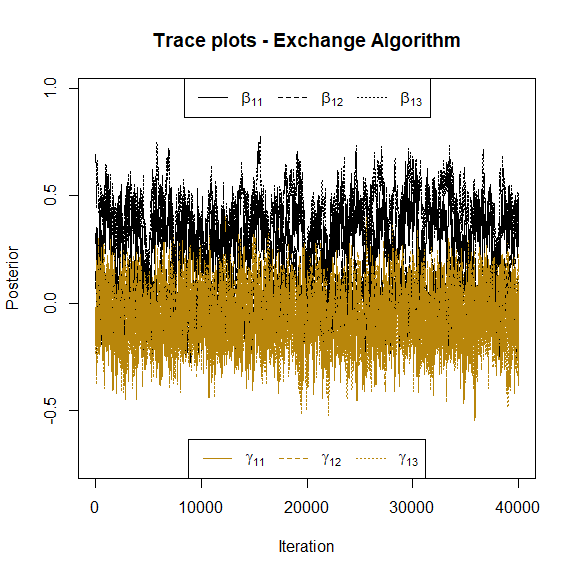

MultRegCMP is an R package designed to fit a Bayesian Regression Model for multivariate count data. We assume that the data is distributed according to the Conway-Maxwell-Poisson distribution (Conway and Maxwell 1962), and for each response variable, we can associate different covariates. This model allows us to account for correlations between the counts by using latent effects based on the Chib and Winkelmann (2001) proposal.
You can find more details about this model once our paper is published.
Installation
You can install the development version of MultRegCMP like so:
devtools::install_github("mauroflorez/MultRegCMP")Load package
Here you can see how we can use the package and their functions
library(MultRegCMP)
## basic example codeMain functions
The function com_sampler(mu, nu) allow us to sample data from the CMP with location parameter mu and shape parameter nu. If ndraws = TRUE it returns the number of draws needed to sample n data. It uses the rejection sampler proposed by Benson and Friel (2021).
com_sampler(4, 5)
#> [1] 4
com_sampler(1, 0.5, 10, ndraws = TRUE)
#> $samples
#> [1] 1 1 4 2 5 1 2 0 2 1
#>
#> $draws
#> [1] 20
#>
#> $log_Bf
#> [1] 1.591368Functions log_cmp calculate the log-likelihood of the unnormalized component of the CMP, while llk_cmp calculate the approximate log-likelihood of the distribution as suggested by Benson and Friel (2021).
llk_cmp(y = 2, mu = 2, nu = 1.5)
#> [1] -1.148141Finally, to implement our model we use the main function mcmc_cmp. This function requires two important componentes; X is the covariates information, this object is a list, where every element of the list is a covariance matrix for every response. On the other hand, y is a matrix (nxJ) containing all the J response variables and the n observations. We can see an example below
n = 50; J = 2
X = list(matrix(rnorm(3*n), ncol = 3), matrix(rnorm(3*n), ncol = 3))
beta <- list(c(1,0.1, 1), c(0, 0.5, -0.5))
mu <- exp(prod_list(X, beta))
y = matrix(rpois(n = length(mu), lambda = mu), nrow = n)To fit our model, we require the number of draws S, the number of samples burn nburn and some parameters for the MCMC - Exchange Algorithm steps.
fit <- mcmc_cmp(y, X, S = 40000, nburn = 1000, v0 = 40, scale_cov_b = 0.8, scale_cov_beta = 0.04, scale_cov_gamma = 0.06, progress = "bar")Parameter Estimation
We can see the estimations of the model as
fit$estimation_beta
#> [[1]]
#> [1] 0.30977519 0.03614515 0.43375142
#>
#> [[2]]
#> [1] 0.03725911 0.13443572 -0.16555769
fit$estimation_gamma
#> [[1]]
#> [1] -0.08724856 -0.01579589 -0.09731214
#>
#> [[2]]
#> [1] -0.02521666 -0.04461323 0.08724741Also, we plot the trace plots of the parameters associated to the location and shape parameters to check convergence visually. Here we can see the trace plots associated to the first response variable:

and similarly for the parameters of the second response.
Additionally DIC_cmp allows to calculate an approximation of the Deviance Information Criterion (Spiegelhalter et al. 2002) of the fitted model for each response.
DIC_cmp(fit)
#> [1] 143.4882 143.9974